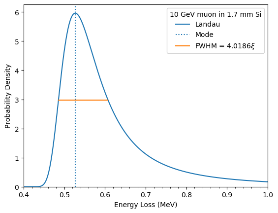

Energy loss of charged particles in matter#
The physical process of kinetic energy loss in charged particles, as they pass through matter and ionize electrons, was first characterized [1] by Lev Landau using this distribution that now bears his name. This distribution is of limited use in practice because it is idealized in that: its support has no upper bound, while physically the energy loss cannot exceed the total energy of the incident particle, corrected by Vavilov [2]; and that it assumes an idealized probability of single scattering proportional to \(1/r^2\). The latter idealization has had improvements made by numerous researchers, see e.g. [3]. For further discussion on modeling the passage of particles through matter, see [4], Section 34.2.9.
In typical use in the context of energy loss in matter, the Landau distribution
is parameterized by its most probable energy loss value E_mpv and a width
parameter xi (\(\Delta_p\) and \(\xi\), respectively, in Ref. [4],
Eq. 34.12). The loc and scale parameters of the implementation in
scipy.stats.landau are related to these parameters as demonstrated
below:
import numpy as np
from scipy import stats
def landau_energy_loss(E, E_mpv, xi):
"""Landau energy loss PDF
Parameters
----------
E : float or array_like
Energy loss random variate
E_mpv : float
Most probable energy loss parameter
xi : float
Width parameter
"""
landau_loc = E_mpv + xi * (1 - np.euler_gamma - 0.20005183774398613)
return stats.landau.pdf(
E, loc=landau_loc + xi * np.log(np.pi / 2), scale=xi * np.pi / 2
)
In the below script, we use this parameterization to predict the distribution of energy loss by a muon traversing a silicon detector, recreating Fig. 34.7 of Ref. [4]. The constants used in this example, namely \(E_\mathrm{mpv} = 0.5268\) MeV and \(\xi = 0.03031\) MeV, are derived from Eqn. 34.12 of Ref. [4] for a 10 GeV muon traversing 1.7 mm of silicon. We omit the details of this calculation here. As mentioned in the reference, the width parameter is approximately one quarter of the full width at half maximum (FWHM) of the distribution, which we demonstrate.
from functools import partial
from scipy.optimize import root_scalar
import matplotlib.pyplot as plt
E_mpv = 0.5268
xi = 0.03031
loss = partial(landau_energy_loss, E_mpv=E_mpv, xi=xi)
evals = np.linspace(0.4, 1.0, 400)
dist_scipy = loss(evals)
lmax = loss(E_mpv)
lo_halfmax = root_scalar(lambda E: loss(E) - lmax / 2, bracket=(0.4, E_mpv))
hi_halfmax = root_scalar(lambda E: loss(E) - lmax / 2, bracket=(E_mpv, 1.0))
fwhm = hi_halfmax.root - lo_halfmax.root
fig, ax = plt.subplots(1, 1)
ax.plot(evals, dist_scipy, label="Landau")
ax.axvline(E_mpv, ls=":", label="Mode")
ax.plot(
[lo_halfmax.root, hi_halfmax.root],
[lmax / 2, lmax / 2],
label=rf"FWHM = ${fwhm / xi:.4f}\xi$",
)
ax.set_ylabel("Probability Density")
ax.set_xlabel("Energy Loss (MeV)")
ax.set_ylim(0, None)
ax.set_xlim(0.4, 1.0)
ax.set_xticks(np.arange(0.4, 1.0, 0.02), minor=True)
ax.legend(title="10 GeV muon in 1.7 mm Si")
plt.show()
